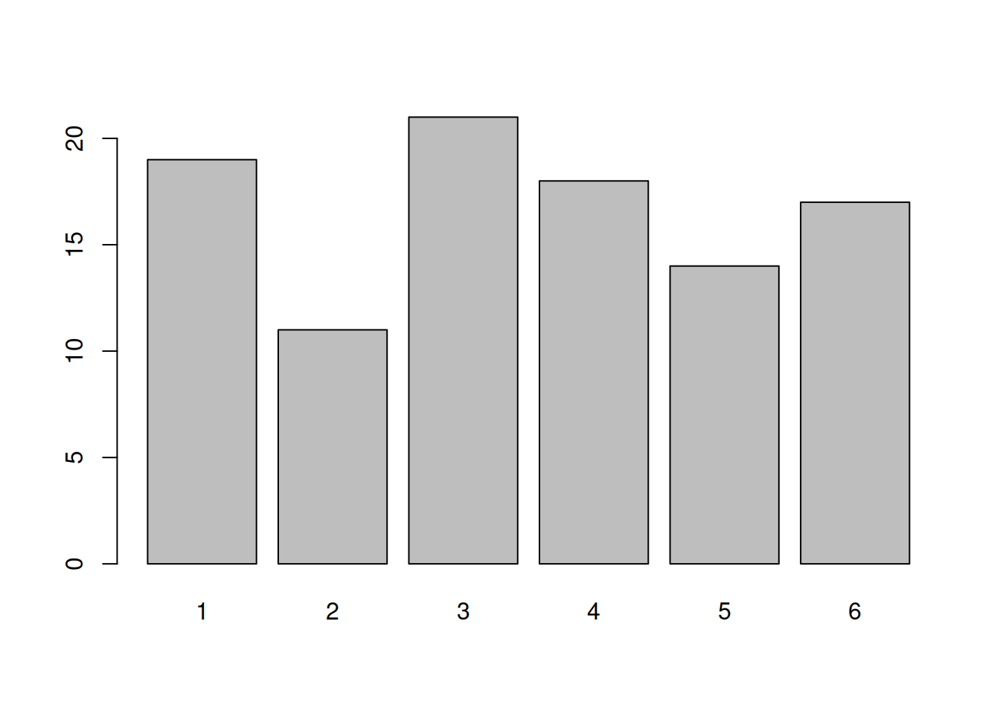
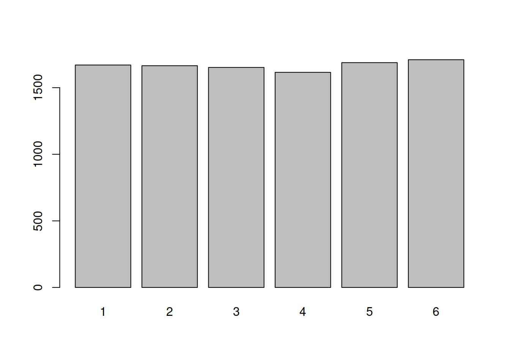
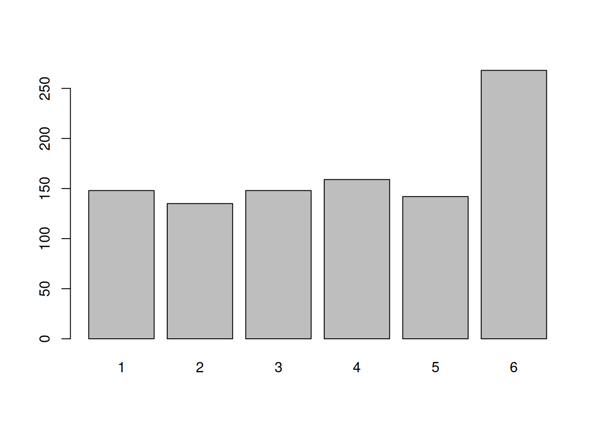
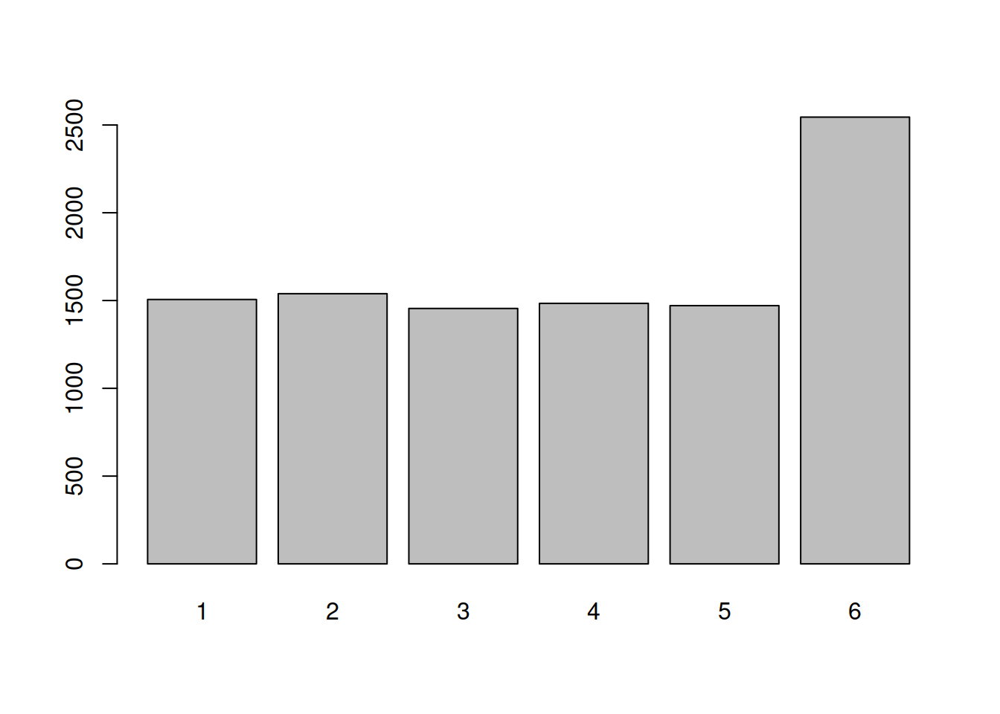
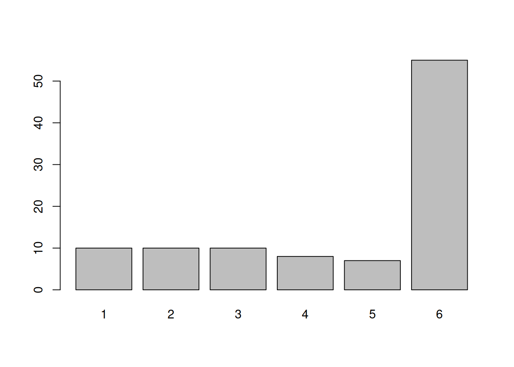
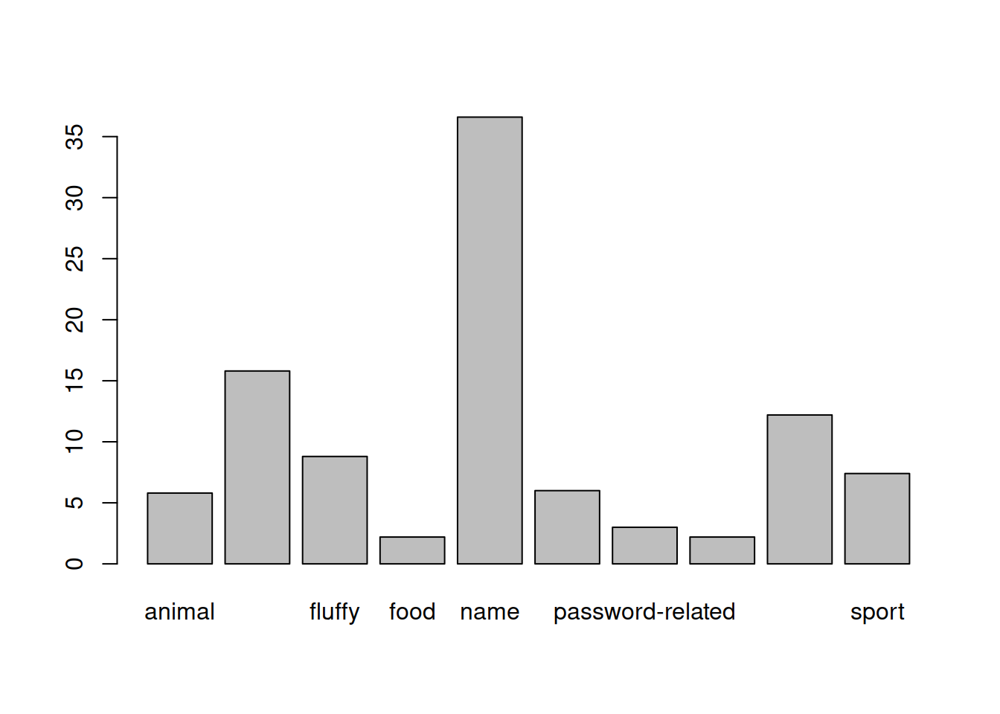

Categorical Distributions
Prerequisites
Please ensure you have successfully installed R and RStudio, or are working on RStudio Cloud, and that you have completed the tasks on the Getting started in R & RStudio page, which introduced the basics of a) how to navigate around Rstudio, b) how to create a Rmarkdown document, c) how to read data into R, and d) how to use R to do basic arithmetic.
Exercises: Dice Simulations
Open Rstudio, and make sure you have your USMR course project open.
Open a new Rmarkdown document:
File > New File > R Markdown..
And in your first code-chunk, copy the code from the lecture which creates a custom function called dice() (copied below). Be sure to run the code-chunk.
dice <- function(num = 1) {
sample(1:6, num, replace=TRUE)
}Remember, you can add a code-chunk with the “Insert” button in the top right of your Rmarkdown document, and clicking R. Or you can use a shortcut of Ctrl + Alt + i.

Roll the dice 100 times.
Store the results in an object in your environment.
Create a barplot showing the frequency with which each number was landed on in the 100 rolls.
roll100 <- dice(100)We can get the frequency table using table()
table(roll100)## roll100
## 1 2 3 4 5 6
## 14 17 13 26 7 23Which we can then pass to the barplot() function:
barplot(table(roll100))
Do the same for 1000 rolls, and then for 10,000.
What do you notice?
barplot(table(dice(1000)))
barplot(table(dice(10000)))
gets flatter - uniform probability!
Copy the code below into a code-chunk and run it.
It creates a new function called wdice() which simulates the rolling of a die which is slightly weighted.
Roll the weighted die 100 times and plot the frequency distribution. Do the same for 1000 and 10,000 rolls.
Does a pattern emerge? At how many rolls?
wdice <- function(num = 1){
sample(1:6, num, replace=TRUE, prob = c(0.15,0.15,0.15,0.15,0.15,0.25))
}
barplot(table(wdice(100)))
barplot(table(wdice(1000)))
barplot(table(wdice(10000)))
100 rolls is not enough to reliably perceive the weighting of the die. 1000 is though!
Take another loook at the wdice() function. Try modifying it so that 50% of the time it lands on number 6.
Hint: The prob bit is what was different from the original dice() function, and it looks like it takes a set of probabilities prob = c(.....). Be careful to remember that the probability of these different outcomes must sum to 1 (i.e., it’s not possible to land on 6 50% of the time as well as land on 5 60% of the time).
To test out your modified function, you will need to re-run code which defines the function.
Think of it as “overwriting”, “replacing”, or “reassigning”
# define an object called "x" which has the value 3
x <- 3
# print the object x
x ## [1] 3# reassign the name "x" to the value 5
x <- 5When you use the assignment operator <- we assign a name to a value and store in R’s memory. To edit any of these things, we simply reassign the name to with the edited value. This applies to functions, to dataframes, and to specific observations in dataframes etc.
wdice <- function(num = 1){
sample(1:6, num, replace=TRUE, prob = c(0.1,0.1,0.1,0.1,0.1,0.5))
}
Can you detect the weighting in your new die (the one which 50% of the time lands on number 6) in only 100 rolls?
Conceptually, what can we learn from this toy example.
Hint: Think of how strongly weighted the die is as an effect size, and the number of rolls as the sample size.
barplot(table(wdice(100)))
the bigger effect size/difference, the smaller the sample size required to observe it.
Reading: Accessing Data in R
Now that we’ve played with a toy example for a bit, we’re going to read in some data, and look at some of the variables
Let’s read some data into R.
First we’ll load the tidyverse package, so that we can use the read_csv() function.
library(tidyverse)
starwars2 <- read_csv("https://uoepsy.github.io/data/starwars2.csv")Reading data from a URL
Note that when you have a url for some data, such as this, you can read it in directly by giving functions like read_csv() the url inside quotation marks.
The data contains information on various characteristics of characters from Star Wars.
We can print out the top of the data by using the head() function which displays the first six rows of the data by default. You could change this by saying, for example, head(data, n = 10):
head(starwars2, n = 10)## # A tibble: 10 x 6
## name height hair_color eye_color homeworld species
## <chr> <dbl> <chr> <chr> <chr> <chr>
## 1 Luke Skywalker 172 blond blue Tatooine Human
## 2 C-3PO 167 <NA> yellow Tatooine Human
## 3 R2-D2 96 <NA> red Naboo Droid
## 4 Darth Vader 202 none yellow Tatooine Human
## 5 Leia Organa 150 brown brown Alderaan Human
## 6 Owen Lars 178 brown, grey blue Tatooine Human
## 7 Beru Whitesun lars 165 brown blue Tatooine Human
## 8 R5-D4 97 <NA> red Tatooine Droid
## 9 Biggs Darklighter 183 black brown Tatooine Human
## 10 Obi-Wan Kenobi 182 auburn, white blue-gray Stewjon Human(Don’t worry about the
Tip: Try clicking on the data in your environment (the top right window of RStudio). It will open the data in a tab in the editor window - this is another way of looking at the data, more like you would in spreadsheet software like Microsoft Excel. This can be time-consuming if your data file is big.
We can take a look at how big the data is (the dimensions), using dim()
dim(starwars2)## [1] 75 6There’s a reasonable amount of data in there - 75 rows and 6 columns.
In the starwars2 data, each character is an observational unit, and there are 6 variables (things which vary between units) such as their height, species, homeworld, etc.
Units and variables
The individual entities on which data are collected are called observational units or cases. Often (but not always), these equate to the rows of a dataset.
A variable is any characteristic that varies from observational unit to observational unit (these are often the columns of the dataset)
What if we want to extract certain subsections of our dataset, such as specific observational units or variables?
This is where we learn about two important bits of R code used to access parts of data - the dollar sign $, and the square brackets [].
The dollar sign $
The dollar sign allows us to extract a specific variable from a dataframe.
For instance, we can pull out the variable named “eye_color” in the data, by using $eye_color after the name that we gave our dataframe:
starwars2$eye_color## [1] "blue" "yellow" "red" "yellow"
## [5] "brown" "blue" "blue" "red"
## [9] "brown" "blue-gray" "blue" "blue"
## [13] "blue" "brown" "black" "orange"
## [17] "hazel" "blue" "yellow" "brown"
## [21] "red" "brown" "blue" "orange"
## [25] "blue" "brown" "black" "red"
## [29] "blue" "orange" "orange" "orange"
## [33] "yellow" "orange" NA "brown"
## [37] "yellow" "pink" "hazel" "yellow"
## [41] "black" "orange" "brown" "yellow"
## [45] "black" "brown" "blue" "orange"
## [49] "yellow" "black" "blue" "brown"
## [53] "brown" "blue" "yellow" "blue"
## [57] "blue" "brown" "brown" "brown"
## [61] "brown" "yellow" "yellow" "black"
## [65] "black" "blue" "unknown" "unknown"
## [69] "gold" "black" "green, yellow" "blue"
## [73] "brown" "black" NAEach variable in a dataframe is a vector (a set of values). Once extracted, we will have a vector and not a dataframe.
The square brackets []
Square brackets are used to do what is known as indexing (finding specific entries in your data).
We can retrieve bits of data by identifying the \(i^{th}\) entry(s) inside the square brackets, for instance:
# assign the numbers 10, 20 ... 100 to the name "somevalues"
somevalues <- c(10, 20, 30, 40, 50, 60, 70, 80, 90, 100)
# pull out the 3rd entry
somevalues[3]## [1] 30In a dataframe we have an extra dimension - we have rows and columns. Using square brackets with a dataframe needs us to specify both:
Let’s look at some examples:
# first row, fourth column:
starwars2[1, 4]## # A tibble: 1 x 1
## eye_color
## <chr>
## 1 blue# tenth row, first column:
starwars2[10, 1]## # A tibble: 1 x 1
## name
## <chr>
## 1 Obi-Wan KenobiIf we leave either rows or columns blank, then we will get out all of them:
# tenth row, all columns:
starwars2[10, ]## # A tibble: 1 x 6
## name height hair_color eye_color homeworld species
## <chr> <dbl> <chr> <chr> <chr> <chr>
## 1 Obi-Wan Kenobi 182 auburn, white blue-gray Stewjon Human# all rows, 2nd column:
starwars2[ , 2]## # A tibble: 75 x 1
## height
## <dbl>
## 1 172
## 2 167
## 3 96
## 4 202
## 5 150
## 6 178
## 7 165
## 8 97
## 9 183
## 10 182
## # … with 65 more rowsThere are is another way to identify column - we can use the name in quotation marks:
# first row, "species" column
starwars2[1, "species"]## # A tibble: 1 x 1
## species
## <chr>
## 1 Human
Finally, we can also ask for multiple rows, or multiple columns, or both! To do that, we use the combine function c():
# the 1st AND the 6th row,
# and the 1st AND 3rd columns:
starwars2[c(1,6), c(1,3)]## # A tibble: 2 x 2
## name hair_color
## <chr> <chr>
## 1 Luke Skywalker blond
## 2 Owen Lars brown, grey
And we can specify a sequence using the colon, from:to:
# FROM the 1st TO the 6th row, all columns:
starwars2[1:6, ]## # A tibble: 6 x 6
## name height hair_color eye_color homeworld species
## <chr> <dbl> <chr> <chr> <chr> <chr>
## 1 Luke Skywalker 172 blond blue Tatooine Human
## 2 C-3PO 167 <NA> yellow Tatooine Human
## 3 R2-D2 96 <NA> red Naboo Droid
## 4 Darth Vader 202 none yellow Tatooine Human
## 5 Leia Organa 150 brown brown Alderaan Human
## 6 Owen Lars 178 brown, grey blue Tatooine HumanWhy? Because the colon operator, from:to, creates a vector from the value from to the value to in steps of 1.
1:6## [1] 1 2 3 4 5 6
The dollar sign $
Used to extract a variable from a dataframe:
dataframe$variable
The square brackets []
Used to extract parts of an R object by identifying rows and/or columns, or more generally, “entries”. Left blank will return all.
vector[entries]dataframe[rows, columns]
Accessing by a condition
We can also do something really useful, which is to access all the entries in the data for which a specific condition is true.
Let’s take a simple example to start:
somevalues <- c(10, 10, 0, 20, 15, 40, 10, 40, 50, 35)To only select values which are greater than 20, we can use:
somevalues[somevalues > 20]## [1] 40 40 50 35Let’s unpack what this is doing..
First, let’s look at what somevalues > 20 does. It returns TRUE for the entries of somevalues which are greater than 20, and FALSE for the entries of somevalues that are not (that is, which are less than, or equal to, 20.
This statement somevalues > 20 is called the condition.
somevalues > 20## [1] FALSE FALSE FALSE FALSE FALSE TRUE FALSE TRUE TRUE TRUEWe can give a name to this sequence of TRUEs and FALSEs
condition <- somevalues > 20
condition## [1] FALSE FALSE FALSE FALSE FALSE TRUE FALSE TRUE TRUE TRUENow consider putting the sequence of TRUEs and FALSEs inside the square brackets in somevalues[].
This returns only the entries of somevalues for which the condition is TRUE.
somevalues[condition]## [1] 40 40 50 35So what we can do is use a condition inside the square brackets to return all the values for which that condition is TRUE.
Note that you don’t have to always give a name to the condition. This works too:
somevalues[somevalues > 20]## [1] 40 40 50 35
We can extend this same logic to a dataframe.
Let’s suppose we want to access all the entries in our Star Wars data who have the value “Droid” in the species variable.
To work out how to do this, we first need a line of code which defines our condition - one which returns TRUE for each entry of the species variable which is “Droid”, and FALSE for those that are not “Droid”.
We can use the dollar sign to pull out the species variable:
starwars2$species## [1] "Human" "Human" "Droid" "Human" "Human"
## [6] "Human" "Human" "Droid" "Human" "Human"
## [11] "Human" "Human" "Wookiee" "Human" "Rodian"
## [16] "Hutt" "Human" "Human" "Human" "Human"
## [21] "Trandoshan" "Human" "Human" "Mon Calamari" "Human"
## [26] "Ewok" "Sullustan" "Neimodian" "Human" "Gungan"
## [31] "Gungan" "Gungan" "Toydarian" "Dug" "unknown"
## [36] "Human" "Zabrak" "Twi'lek" "Twi'lek" "Vulptereen"
## [41] "Xexto" "Toong" "Human" "Cerean" "Nautolan"
## [46] "Zabrak" "Tholothian" "Iktotchi" "Quermian" "Kel Dor"
## [51] "Chagrian" "Human" "Human" "Human" "Geonosian"
## [56] "Mirialan" "Mirialan" "Human" "Human" "Human"
## [61] "Human" "Clawdite" "Besalisk" "Kaminoan" "Kaminoan"
## [66] "Human" "Aleena" "Skakoan" "Muun" "Togruta"
## [71] "Kaleesh" "Wookiee" "Human" "Pau'an" "unknown"And we can ask R whether each value is equal to “Droid” (Remember: in R, we ask whether something is equal to something else by using a double-equals, ==). A single equal sign would be wrong, as it denotes assignment.
starwars2$species == "Droid"## [1] FALSE FALSE TRUE FALSE FALSE FALSE FALSE TRUE FALSE FALSE FALSE FALSE
## [13] FALSE FALSE FALSE FALSE FALSE FALSE FALSE FALSE FALSE FALSE FALSE FALSE
## [25] FALSE FALSE FALSE FALSE FALSE FALSE FALSE FALSE FALSE FALSE FALSE FALSE
## [37] FALSE FALSE FALSE FALSE FALSE FALSE FALSE FALSE FALSE FALSE FALSE FALSE
## [49] FALSE FALSE FALSE FALSE FALSE FALSE FALSE FALSE FALSE FALSE FALSE FALSE
## [61] FALSE FALSE FALSE FALSE FALSE FALSE FALSE FALSE FALSE FALSE FALSE FALSE
## [73] FALSE FALSE FALSEFinally, we can use this condition inside our square brackets to access the entries of the data for which this condition is TRUE:
# I would read the code below as:
# "In the starwars2 dataframe, give me all the rows for which the
# condition starwars2$species=="Droid" is TRUE, and give me all the columns."
starwars2[starwars2$species == "Droid", ]## # A tibble: 2 x 6
## name height hair_color eye_color homeworld species
## <chr> <dbl> <chr> <chr> <chr> <chr>
## 1 R2-D2 96 <NA> red Naboo Droid
## 2 R5-D4 97 <NA> red Tatooine Droid
Editing parts of the data
Now that we’ve seen a few ways of accessing sections of data, we can learn how to edit them!
Data Cleaning
One of the most common reasons you will need to modify entries in your data is in data cleaning. This is the process of identifying incorrect/incomplete/irrelevant data, and replacing/modifying/deleting them.
Changing specific entries
Above, we looked at the subsection of the data where the species variable had the entry “Droid”. Some of you may have noticed earlier that we had some data on C3PO. Is he not also a droid?

(Looks pretty Droid-y to me! disclaimer: I know nothing about Star Wars 🙂 )
Just as we saw above how to access specific entries, e.g.:
# 2nd row, all columns
starwars2[2, ]## # A tibble: 1 x 6
## name height hair_color eye_color homeworld species
## <chr> <dbl> <chr> <chr> <chr> <chr>
## 1 C-3PO 167 <NA> yellow Tatooine Human# 2nd row, 6th column (the "species" column)
starwars2[2,6]## # A tibble: 1 x 1
## species
## <chr>
## 1 HumanWe can change these by assigning them a new value (remember the <- symbol):
# C3PO is a droid, not a human
starwars2[2,6] <- "Droid"
# Look at the 2nd row now -
# the entry in the "species" column has changed:
starwars2[2, ]## # A tibble: 1 x 6
## name height hair_color eye_color homeworld species
## <chr> <dbl> <chr> <chr> <chr> <chr>
## 1 C-3PO 167 <NA> yellow Tatooine DroidThink of it as “overwriting”, “replacing”, or “reassigning”
We have replaced, or overwritten, the entry in the 2nd row and 6th column of the data (starwars2[2,6]) with the value “Droid”.
Changing entries via a condition
We saw above how to access parts of data by means of a condition, with code such as:
# "In the starwars2 dataframe, give me all the rows for which the
# condition starwars2$homeworld=="Naboo" is TRUE, and give me all the columns."
# remember, we're asking for all the columns by leaving it blank *after* the
# comma inside the square brackets: data[rows, columns]
starwars2[starwars2$homeworld=="Naboo", ]## # A tibble: 8 x 6
## name height hair_color eye_color homeworld species
## <chr> <dbl> <chr> <chr> <chr> <chr>
## 1 R2-D2 96 <NA> red Naboo Droid
## 2 Palpatine 170 grey yellow Naboo Human
## 3 Jar Jar Binks 196 none orange Naboo Gungan
## 4 Roos Tarpals 224 none orange Naboo Gungan
## 5 Rugor Nass 206 none orange Naboo Gungan
## 6 Gregar Typho 185 black brown Naboo Human
## 7 Cordé 157 brown brown Naboo Human
## 8 Dormé 165 brown brown Naboo HumanWhat if we wanted to modify it so that every character from “Naboo” was actually of species “Nabooian”?
We can do that in a number of ways, all of which do the same thing - namely, they access parts of the data and assign them the new value “Nabooian”.
Study the lines of code below and their interpretations:
# In the starwars2 data, give the rows for which condition
# starwars2$homeworld=="Naboo" is TRUE, and select only the "species" column.
# Assign to these selected entries the value "Nabooian".
starwars2[starwars2$homeworld=="Naboo", "species"] <- "Nabooian"
# In the starwars2 data, give the rows for which condition
# starwars2$homeworld=="Naboo" is TRUE, and select only the 6th column.
# Assign to these selected entries the value "Nabooian".
starwars2[starwars2$homeworld=="Naboo", 6] <- "Nabooian"
# Extract the species variable from the starwars2 data (it's a vector).
# Pick the entries for which the condition starwars2$homeworld=="Naboo" is TRUE.
# Assign to these selected entries the value "Nabooian".
starwars2$species[starwars2$homeworld=="Naboo"] <- "Nabooian"Changing a variable
Another thing we might want to do is change a whole variable (a whole column) in some way.
The logic is the same, for instance:
starwars2$height <- starwars2$height / 100What we have done above is taking the variable “height” from the dataframe “starwars2”, dividing it by 100 via starwars2$height / 100, and then assigning the result to the same variable, i.e. we overwrite the column.
Equally, we could also have added a new column named “height2” with those values if you do not want to overwrite “height”:
starwars2$height2 <- starwars2$height / 100This would have left the “height” variable as-is, and created a new one called “height2” which was the values in “height” divided by 100.
Removing rows or columns
Lastly, we might want to change the data by removing a row or a column.
Again, the logic remains the same, in that we use <- to assign the edited data to a name (either a new name, thus creating a new object, or an existing name, thereby overwriting that object).
For instance, notice that the 35th and 75th rows of our data probably aren’t a valid observation - I’m reasonably sure that Marge and Homer Simpson never appeared in Star Wars:
starwars2[c(35,75), ]## # A tibble: 2 x 6
## name height hair_color eye_color homeworld species
## <chr> <dbl> <chr> <chr> <chr> <chr>
## 1 Marge Simpson 1.7 Blue <NA> Springfield unknown
## 2 Homer Simpson 1.8 <NA> <NA> Springfield unknownWe can remove a certain row(s) by using a minus sign - inside the square brackets
# everything minus the 75th row
starwars2[-75, ]## # A tibble: 74 x 6
## name height hair_color eye_color homeworld species
## <chr> <dbl> <chr> <chr> <chr> <chr>
## 1 Luke Skywalker 1.72 blond blue Tatooine Human
## 2 C-3PO 1.67 <NA> yellow Tatooine Droid
## 3 R2-D2 0.96 <NA> red Naboo Nabooian
## 4 Darth Vader 2.02 none yellow Tatooine Human
## 5 Leia Organa 1.5 brown brown Alderaan Human
## 6 Owen Lars 1.78 brown, grey blue Tatooine Human
## 7 Beru Whitesun lars 1.65 brown blue Tatooine Human
## 8 R5-D4 0.97 <NA> red Tatooine Droid
## 9 Biggs Darklighter 1.83 black brown Tatooine Human
## 10 Obi-Wan Kenobi 1.82 auburn, white blue-gray Stewjon Human
## # … with 64 more rows# everything minus the (35th and 75th rows)
starwars2[-c(35, 75), ]## # A tibble: 73 x 6
## name height hair_color eye_color homeworld species
## <chr> <dbl> <chr> <chr> <chr> <chr>
## 1 Luke Skywalker 1.72 blond blue Tatooine Human
## 2 C-3PO 1.67 <NA> yellow Tatooine Droid
## 3 R2-D2 0.96 <NA> red Naboo Nabooian
## 4 Darth Vader 2.02 none yellow Tatooine Human
## 5 Leia Organa 1.5 brown brown Alderaan Human
## 6 Owen Lars 1.78 brown, grey blue Tatooine Human
## 7 Beru Whitesun lars 1.65 brown blue Tatooine Human
## 8 R5-D4 0.97 <NA> red Tatooine Droid
## 9 Biggs Darklighter 1.83 black brown Tatooine Human
## 10 Obi-Wan Kenobi 1.82 auburn, white blue-gray Stewjon Human
## # … with 63 more rowsAnd we can simply re-use the name “starwars2” to overwrite the data and make this change take effect (rather than just print out the result, which the code above did):
starwars2 <- starwars2[-c(35, 75), ](now, in the environment pane of Rstudio, the object named “starwars2” will say 73 observations, rather than 75, which it had before - we’ve removed the 2 rows)
The same logic applies for columns:
# Create a new object called "anonymous_starwars2" and assign it
# to the values which are the "starwars2" dataframe minus the
# 1st column (the "name" column):
anonymous_starwars2 <- starwars2[, -1]
# print out anonymous_starwars2
anonymous_starwars2## # A tibble: 73 x 5
## height hair_color eye_color homeworld species
## <dbl> <chr> <chr> <chr> <chr>
## 1 1.72 blond blue Tatooine Human
## 2 1.67 <NA> yellow Tatooine Droid
## 3 0.96 <NA> red Naboo Nabooian
## 4 2.02 none yellow Tatooine Human
## 5 1.5 brown brown Alderaan Human
## 6 1.78 brown, grey blue Tatooine Human
## 7 1.65 brown blue Tatooine Human
## 8 0.97 <NA> red Tatooine Droid
## 9 1.83 black brown Tatooine Human
## 10 1.82 auburn, white blue-gray Stewjon Human
## # … with 63 more rowsRefresher: Types of Data
In the dice-rolling example, each roll of the die could take one of a discrete set of responses (1, 2, 3, 4, 5 or 6). A die cannot land on 5.3, or 2.6.
There are many different things we can measure / record on observational units, and the data we collect will also have different characteristics. Some data will be similar to rolling a die in that values take on categories, and others could take any value on a continuous scale. We distinguish between these different types of data by talking about categorical and numerical variables. Within each, there also are a few important sub-classes.
Categorical variables tell us what group or category each individual belongs to. Each distinct group or category is called a level of the variable.
| Type | Description | Example |
|---|---|---|
| Nominal (Unordered categorical) | A categorical variable with no intrinsic ordering among the levels. | Species: Human, Droid, Wookie, Hutt, … |
| Ordinal (Ordered categorical) | A categorical variable which levels possess some kind of order | Level: Low, Medium, High |
| Binary categorical | A special case of categorical variable with only 2 possible levels | Is_Human: Yes or No. |
Numerical (or quantitative) variables consist of numbers, and represent a measurable quantity. Operations like adding and averaging make sense only for numeric variables.
| Type | Description | Example |
|---|---|---|
| Continuous | Variables which can take any real number within the specified range of measurement | Height: 172, 165.2, 183, … |
| Discrete | Variables which can only take integer number values. For instance, a counts can only take positive integer values (0, 1, 2, 3, etc.) | Number_of_siblings: 0, 1, 2, 3, 4, … |
Exercises: Categorical distributions
For the exercises, we have a dataset on some of the most popular internet passwords, their strength, and how long it took for an algorithm to crack it.
The data is available online at https://uoepsy.github.io/data/passworddata.csv.
| Variable Name | Description |
|---|---|
| rank | Popularity in the database of released passwords |
| password | Password |
| type | Category of password |
| cracked | Time to crack by online guessing |
| strength | Strength = quality of password where 10 is highest, 1 is lowest |
| strength_cat | Strength category (weak, medium, strong) |
Create a new heading in your Rmarkdown document for this set of exercises.
Remember: We make headings using the # outside of a code chunk.
Load in the tidyverse package, and read in the data.
Which variables are categorical?
library(tidyverse)
pwords <- read_csv("https://uoepsy.github.io/data/passworddata.csv")
head(pwords)## # A tibble: 6 x 6
## rank password type cracked strength strength_cat
## <dbl> <chr> <chr> <dbl> <dbl> <chr>
## 1 1 password password-related 6.91 8 medium
## 2 2 123456 simple-alphanumeric 18.5 4 weak
## 3 3 12345678 simple-alphanumeric 1.29 4 weak
## 4 4 1234 simple-alphanumeric 11.1 4 weak
## 5 5 qwerty simple-alphanumeric 3.72 8 medium
## 6 6 12345 simple-alphanumeric 1.85 4 weakall of them except for “cracked”.
create a frequency distribution table, and a frequency plot, of the password type variable.
before, we ran code such as:
roll100 <- dice(100)This created an object named “roll100” which was a vector - a set of values.
What we are now working with is a dataframe, which is simply a list of vectors.
Code which extracts a variable from a dataframe: dataframe$variable extracts it as a vector.
table(pwords$type)##
## animal cool-macho fluffy food
## 29 79 44 11
## name nerdy-pop password-related rebellious-rude
## 183 30 15 11
## simple-alphanumeric sport
## 61 37barplot(table(pwords$type))
Relative frequency distribution
A relative frequency distribution shows the proportion of times each value occurs
(contrast this with the frequency distribution which shows the number of times).
Relative frequencies can be written as fractions, percents, or decimals.
create the relative frequency distributon of the password type. You can do this by dividing the entire table by the sum of the table. R can calculate the sum using sum()
We’ll multiple the whole thing by 100 to make it percentages.
table(pwords$type)/sum(table(pwords$type))*100##
## animal cool-macho fluffy food
## 5.8 15.8 8.8 2.2
## name nerdy-pop password-related rebellious-rude
## 36.6 6.0 3.0 2.2
## simple-alphanumeric sport
## 12.2 7.4barplot(table(pwords$type)/sum(table(pwords$type))*100)
Create a new object in R which is only those passwords which are of the type “fluffy”.
fluffy <- pwords[pwords$type=="fluffy", ]
note that the “strength” variable is categorical, but it is ordered (category 1 is the weakest, category 10 is the strongest).
When categorical data is ordered, it is often useful to think about cumulative percentages
Cumulative percentage
Cumulative percentages are another way of expressing a frequency distribution.
They are the successive addition of percentages in each category. For example, the cumulative percentage for the 3rd category is the percentage of respondents in the 1st, 2nd and 3rd category:
| Category | Frequency count (n) | Relative frequency (%) | Cumulative frequency | Cumulative percentage |
|---|---|---|---|---|
| Response 1 | 10 | 13.33333 | 10 | 13.33333 |
| Response 2 | 10 | 13.33333 | 20 | 26.66667 |
| Response 3 | 20 | 26.66667 | 40 | 53.33333 |
| Response 4 | 25 | 33.33333 | 65 | 86.66667 |
| Response 5 | 10 | 13.33333 | 75 | 100.00000 |
In R, we can cumulatively sum a set of numbers using the cumsum() function.
At what password strength are 50% of the “fluffy” passwords on either side?
Hint: how many “fluffy” passwords are there? make a relative frequency table, and use cumsum() to cumulatively sum these to work out where 50% lies.
# frequency table
freq <- table(fluffy$strength)
freq ##
## 1 4 5 6 7 8 9
## 1 5 1 8 12 12 5# relative frequency table
relfreq <- freq / sum(freq)
relfreq##
## 1 4 5 6 7 8 9
## 0.02272727 0.11363636 0.02272727 0.18181818 0.27272727 0.27272727 0.11363636# cumulative percentage
cumsum(relfreq)## 1 4 5 6 7 8 9
## 0.02272727 0.13636364 0.15909091 0.34090909 0.61363636 0.88636364 1.00000000
The point at which 50% of the data lies either side is the median (the mid-point of the data). Check your answer from the previous exercise by using the function median() on the strengths of the fluffy passwords.
How does it compare to the median strength of passwords which are of type “simple-alphanumeric”?
median(fluffy$strength)## [1] 7median(pwords$strength[pwords$type == "simple-alphanumeric"])## [1] 4
Exercises: Advanced plotting